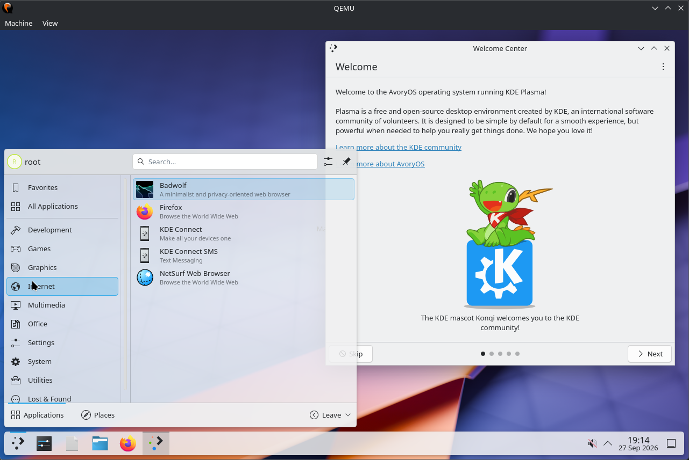
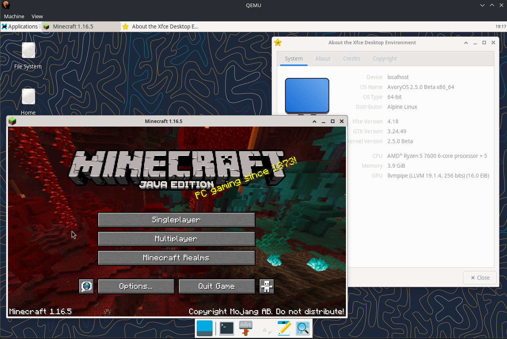

AvoryOS
An open-source monolithic hobby operating system kernel for the x86_64 architecture.
AvoryOS is built from scratch in C and Assembly. It features a Linux-compatible system call interface, POSIX userland compatibility, dual musl and glibc runtimes, native in-kernel IPv4 & IPv6 networking, and a LinuxKPI compatibility layer for upstream graphics drivers.
The system boots using the Limine bootloader protocol (UEFI & BIOS), supports both 4-level and 5-level paging, and runs desktop environments including KDE Plasma 6, XFCE4, and IceWM inside QEMU and on real hardware.
Screenshots
Captures from recent builds running in QEMU with KVM acceleration:


Kernel Highlights
Core & Memory Subsystem
- Architecture: 64-bit higher-half kernel booted via the Limine protocol.
- PMM: Physical Memory Manager with per-CPU page caches and NUMA/node awareness.
- VMM: Virtual Memory Manager with 4-level paging, PCID hardware tagging, hugepages, copy-on-write (COW), demand paging, and batched TLB shootdowns.
- Scheduler: Preemptive SMP scheduler with multi-core APIC/IPI support, POSIX threads, futexes (with priority inheritance), and signals.
- Syscall Engine: Fast syscall handling (
syscall/sysret), user access optimizations (fast_copy_user), and vDSO page.
Virtual Filesystem (VFS)
- VFS with page cache and dentry cache.
- EXT4 & EXT2: Native read/write support.
- FAT32: Support for EFI partitions and USB storage.
- Pseudo-filesystems: RamFS, TmpFS, DevTmpFS, ProcFS (
/proc), and SysFS (/sys).
Networking (IPv4 & IPv6)
- In-kernel network core with a dedicated asynchronous worker thread.
- Dual-stack IPv4 and IPv6 support with Neighbor Discovery (NDP), ICMPv6, and SLAAC autoconfiguration.
- BSD socket API layer (
AF_INETandAF_INET6UDP/TCP sockets). - Realtek RTL8139 NIC driver with SysFS device registration.
Hardware & Driver Support
Storage & Partitioning
- NVMe: PCIe Gen3/Gen4/Gen5 driver with namespace discovery and command queueing.
- GPT: Full GUID Partition Table partitioning support alongside legacy MBR.
- SATA / IDE: AHCI (SATA) and legacy IDE/ATA controllers.
- Ramdisk: Limine module embedded ramdisk boot.
Graphics & LinuxKPI
- Native ascentdrm: Framebuffer and VirtIO-GPU DRM backend with hardware cursor management.
- LinuxKPI Subsystem: Compatibility layer designed to run unmodified upstream Linux kernel drivers (PCIe VFIO passthrough, DRM/TTM/dma-buf).
- AMDGPU: Hardware bring-up and mode-setting pipeline (experimental/WIP).
- Mesa Acceleration: llvmpipe / pixman software rasterizers and Gallium drivers.
Audio & Input
- Audio: Intel High Definition Audio (HDA), AC'97, and Sound Blaster 16 (
/dev/dsp). - Evdev Layer: Unified input subsystem for PS/2 keyboards/mice and USB HID devices.
- USB Controllers: xHCI, EHCI, OHCI, and UHCI.
Userland Ecosystem
AvoryOS combines custom software with standard Linux userland packages through Alpine Linux integration and dual C runtimes:
| Category | Software & Packages |
|---|---|
| Toolchains | GCC, G++, GNU Binutils, Make, Tiny C Compiler (TCC), musl libc, GNU glibc |
| Desktops | KDE Plasma 6, XFCE 4.18, IceWM, AetherDE (AetherWM, Dock & Panel), Weston (Wayland), Xorg Server |
| Games | Minecraft Java Edition 1.16.5 (OpenJDK 17 + LWJGL), Mocktail (Roblox), Yamagi Quake II, DOOM, ClassiCube, Butterscotch |
| Applications | Mozilla Firefox, VLC media player, GNU Coreutils, Bash 5.3, cmus, fastfetch, kilo editor, Kria |
Building from Source
Building requires a 64-bit Linux host (Ubuntu/Debian, Arch, Fedora, etc.).
1. Install Dependencies
sudo apt install make gcc nasm git curl xorriso \
qemu-system-x86_64 e2fsprogs bison flex util-linux parted2. Clone & Bootstrap
git clone -b Rewrite https://github.com/Hidotu-Labs/AvoryOS.git
cd AvoryOS
./bootstrap.sh3. Setup Alpine Userland
./scripts/setup-alpine.sh4. Compile Kernel & Disk Image
make5. Run in QEMU
Launch with KVM acceleration, NVMe root disk, and VirtIO graphics:
make runOr run with software TCG emulation if KVM is unavailable:
make run-tcg